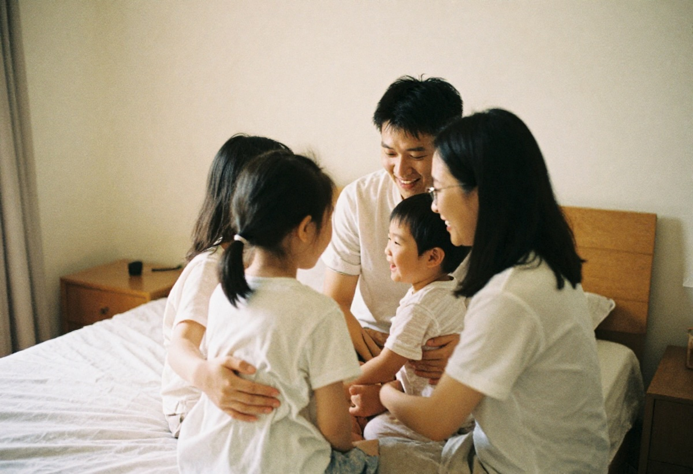

Rüyada Aile Görmek Ne Anlama Gelir?
Rüyalar, bilinçaltımızın gizemli pencereleri gibidir. Gündelik yaşamda yaşadıklarımız, hissettiklerimiz ve bazen farkında bile olmadığımız duygularımız rüyalarda karşımıza çıkar. Özellikle aile gibi hayatımızın merkezinde yer alan figürler, rüyalarımıza sık sık misafir olabilir. Peki, rüyada aile görmek ne anlama gelir? Bu rüya bize ne anlatmak ister?
Aile Figürü: Güven, Bağlılık ve Kökler
Rüyada aile görmek, genellikle güven, destek, bağlılık ve aidiyet gibi duygularla ilişkilendirilir. Aile, kişinin yaşamındaki temel değerleri, geçmişi ve karakterinin oluşmasında etkili olan kökleri temsil eder. Bu tür rüyalar, kişinin içsel dünyasında bir denge arayışında olduğunu gösterebilir.
Rüyada Mutlu Bir Aile Görmek
Eğer rüyanızda ailenizle mutlu bir şekilde vakit geçiriyorsanız, bu iç huzurunuzu, sevdiklerinizle olan sağlıklı ilişkileri ve geleceğe dair olumlu beklentilerinizi temsil edebilir. Ayrıca aileden gelen bir destek ya da bir konuda onay beklediğinizi de simgeliyor olabilir.
Rüyada Aileyle Tartışmak
Aile bireyleriyle tartışmak, yüzleşilmemiş duygulara veya geçmişten gelen kırgınlıklara işaret edebilir. Bu tür bir rüya, aile içinde çözülmemiş bir meseleye dikkat çekiyor olabilir. Aynı zamanda, içsel bir çatışmayı ya da kendinizle olan mücadelenizi yansıtıyor da olabilir.
Rüyada Vefat Etmiş Aile Bireylerini Görmek
Vefat etmiş bir aile ferdini rüyada görmek, genellikle özlem, pişmanlık veya o kişiden alınmak istenen bir öğüt ile bağlantılıdır. Bazen de bu rüya, kişinin zor zamanlarında manevî bir rehberlik arayışını temsil eder.
Rüyada Bilinmeyen Bir Aile Görmek
Rüyada tanımadığınız bir aileyle birlikte olduğunuzu görmek, kendi iç dünyanızda keşfetmediğiniz yönlerinizin farkına varmaya başladığınızı gösterebilir. Aynı zamanda yeni sosyal çevrelere girme isteği ya da mevcut ilişkilerinizdeki eksiklikleri de simgeliyor olabilir.
Sonuç: Aile Rüyaları Kendimizi Anlama Yolculuğudur
Rüyada aile görmek, yalnızca yüzeyde görünen bir olay değildir; genellikle daha derin bir anlam taşır. Kimi zaman geçmişimizle yüzleşmeye, kimi zaman da geleceğimizle ilgili farkındalık kazanmaya yardımcı olabilir. Unutmamak gerekir ki her rüya, kişisel yaşam deneyimlerine göre farklı yorumlanabilir. Bu yüzden rüyanızda gördüklerinizi kendi yaşam bağlamınızda değerlendirmek her zaman daha doğru olacaktır.
Sen de rüyanda ailenle ilgili ilginç bir şey gördün mü? Yorumlarda paylaş, birlikte yorumlayalım!